発砲プラスチック系断熱材について
発砲プラスチック系断熱材について
発泡プラスチック系断熱材の特徴（熱可塑性発泡プラスチック断熱材）
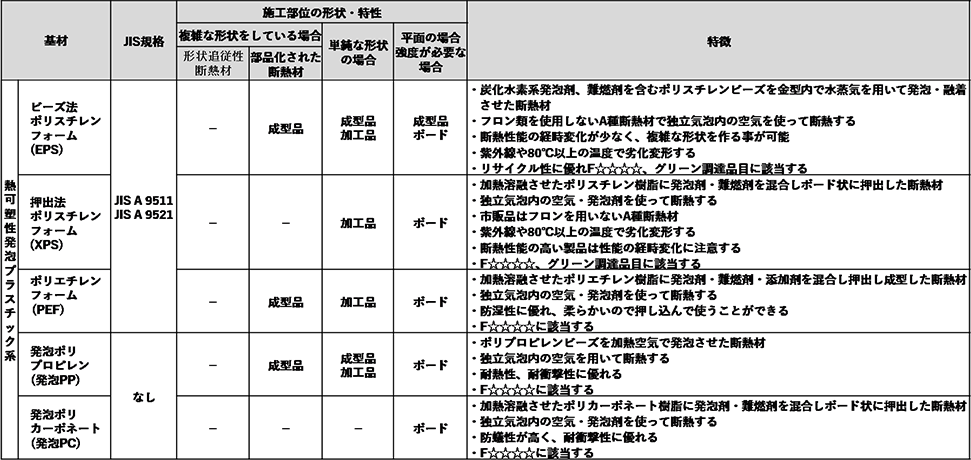
発泡プラスチック系断熱材の特徴（熱硬化性発泡プラスチック断熱材）
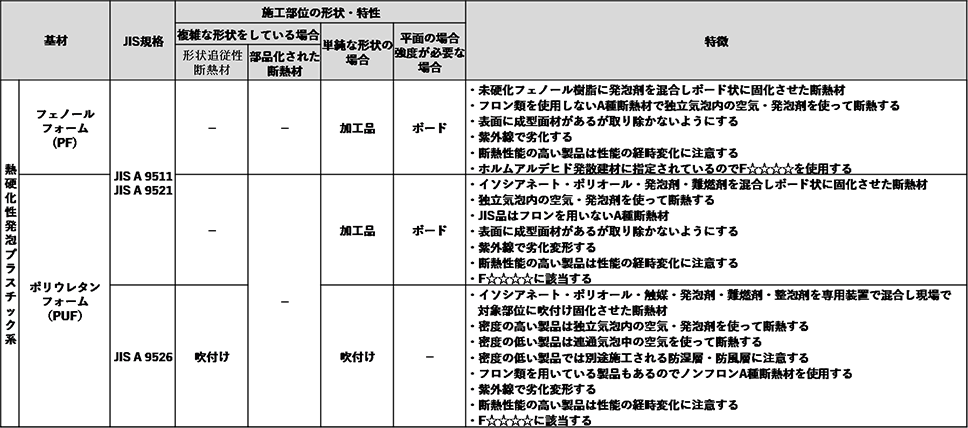
発泡プラスチック系断熱材の形状の種類
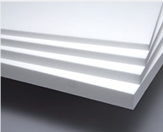
ボード状断熱材
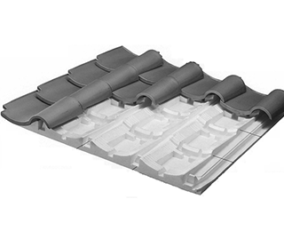
部位形状に合わせた断熱材
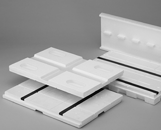
複合部品化された断熱材
発泡プラスチック系断熱材の製造方法（熱可塑性発泡プラスチック断熱材 １）
ビーズ発泡法（EPS、発泡PP 等）
1) 熱可塑性樹脂に発泡剤、難燃剤、添加剤等を加えた発泡性ビーズを作り
2) ビーズを発泡させ目標とする嵩密度の一次発泡粒子を作製する
3) 一次発泡粒子を目的とする断熱材形状の金型内に充填し再度加熱する
以上の工程により発泡粒子を融着させ成形品を得る方法
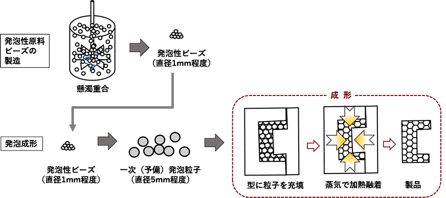
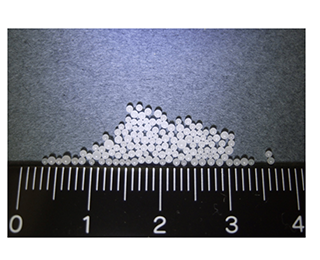
原料発泡性ビーズ
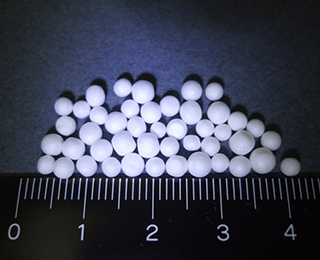
50倍 予備発泡粒
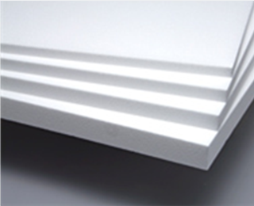
ボード状断熱材
発泡プラスチック系断熱材の製造方法（熱可塑性発泡プラスチック断熱材 ２）
溶融押出発泡法（XPS、PEF、発泡PC等）
熱可塑性樹脂を高温で溶融液状化させ、高温高圧の状態で発泡剤、難燃剤、添加剤を加え押出す。
押出された樹脂は大気圧に開放される際に発泡するので、速やかに冷却し所定の厚さに固化させる。
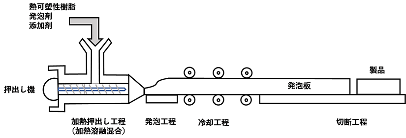
発泡プラスチック系断熱材の製造方法（熱硬化性発泡プラスチック断熱材）
ラミネート発泡法（PUF-B、PF 等）
熱硬化性樹脂の発泡において用いられる方法で、未硬化の樹脂に発泡剤，添加剤等を加え樹脂の硬化条件に調整し押出す。
半硬化状態で発泡しながらメレンゲ状に押し出された樹脂は上下をフィルム，不織布，シート等に挟み発泡硬化行程を通過する間に硬化反応が終了しボード状の製品が得られる。
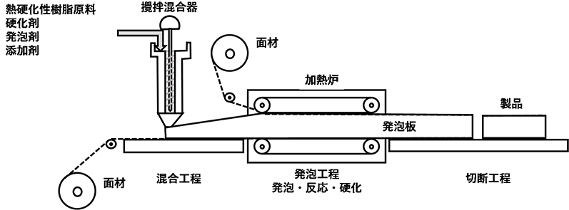
ラミネート発泡法（PUF-B、PF 等）
熱硬化性樹脂の発泡において用いられる方法で、未硬化の樹脂に発泡剤、添加剤等を加え樹脂の硬化条件に調整し、フィルム、
不織布、シート等の面材の上に吐出される。もう一方の面材に挟まれ、半硬化状態で発泡しながら加熱炉を通過する間に硬化反応が終了しボード状の製品が得られる。
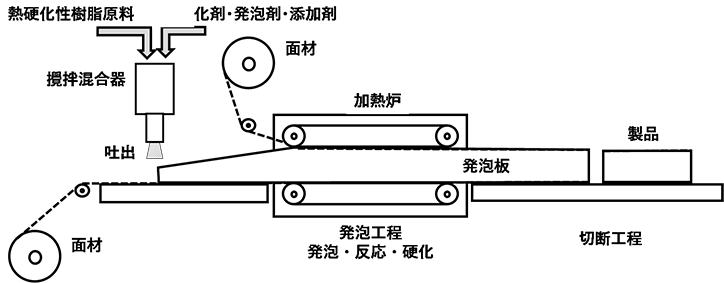
発泡プラスチック断熱材の断面構造
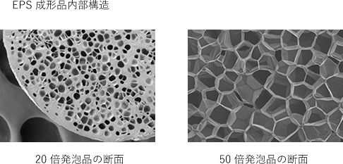
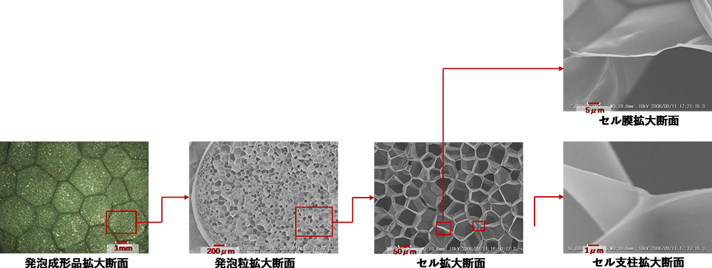
発泡プラスチック系断熱材の断熱理論
発泡プラスチック系断熱材の熱伝導率とセル構造
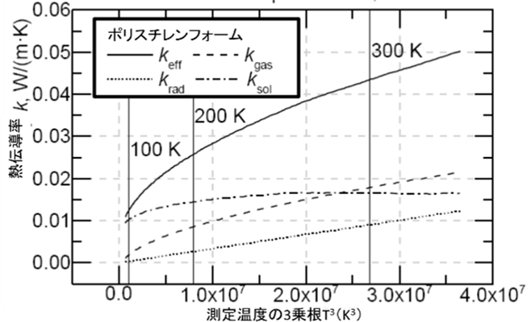
発泡プラスチック断熱材の熱伝導率の内訳
断熱材内部の輻射熱伝導のみを実測することは困難であるため、実験的には断熱材の熱伝導測定値から密度等により容易に推定できる固体熱伝導と気体熱伝導成分を除いた熱伝導を輻射熱伝導として扱います。
λeff: 発泡体の熱伝導率
λgas: 気体の熱伝導率
λrad: 輻射の熱伝導率
λsol: 固体の熱伝導率
小針達也 et.al「. 拡散近似を用いた高温多孔質断熱材におけるふくしゃ伝熱評価」, 熱物性,28[4],(2014),179/184
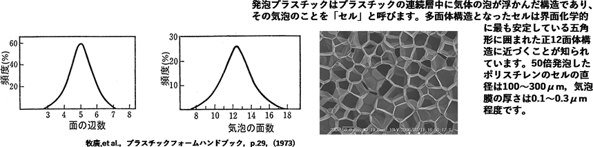
固体伝熱、輻射伝熱
発泡プラスチックでは多くの樹脂が支柱部分に存在するためセル膜厚さが薄く、特に高倍発泡製品では赤外線透過による熱伝導が大きくなってしまいます。
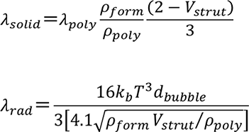
λsolid：発泡体内の固体熱伝導率（W/(m･K)）
λpoly：未発泡樹脂の熱伝導率（W/(m･K)）
ρform，ρpoly：発泡体，未発泡樹脂の密度（kg/m3）
Vstrut：気泡間の支柱ポリマー体積（m3）
λrad：発泡体内の輻射による熱伝導率（W/(m･K)）
T：絶対温度
kb：ステファン・ボルツマン定数（5.670367×10－8 W/(m2 K4)
dbubble：平均気泡直径（m）
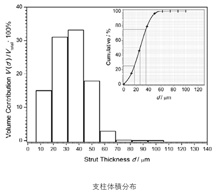
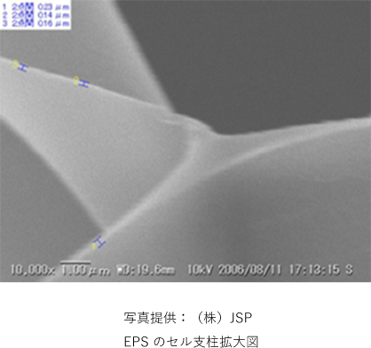
Morphometric Analysis of One-Component Polyurethane Foams Applicable in the Building Sector via X-ray Computed Microtomography
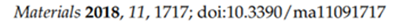
赤外線遮蔽材の影響
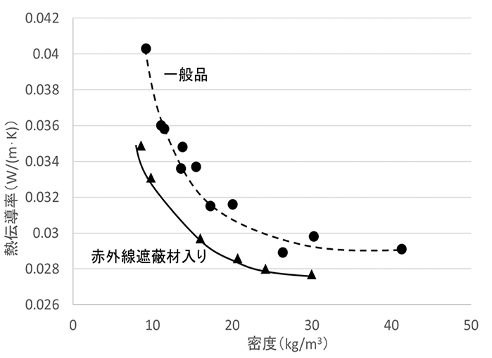
赤外線遮蔽剤（グラファイト）を含むビーズ法
ポリスチレンフォームの熱伝導率
高倍発泡成形品では樹脂膜の厚さが薄く、枚数も少ないため赤外線遮蔽効果が低くなることで、熱伝導率が極端に大きくなります。
しかし、樹脂に赤外線遮蔽材を加えることで遮蔽効果が発揮されるようになり、低熱伝導率の製品が得られるようにります。